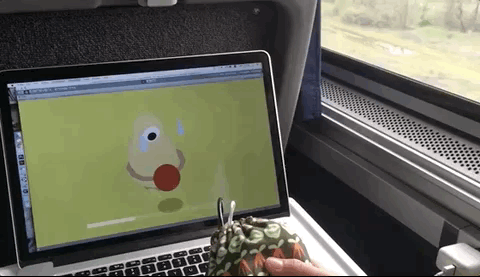
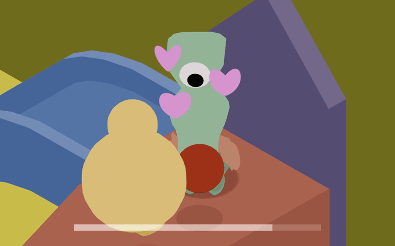
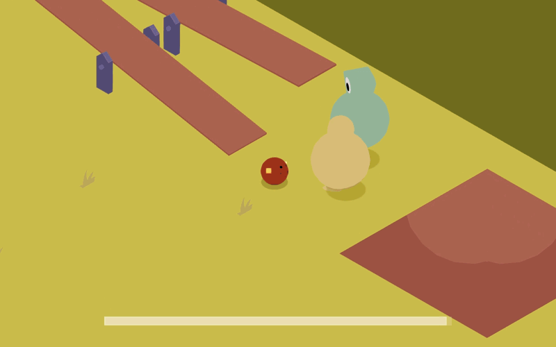
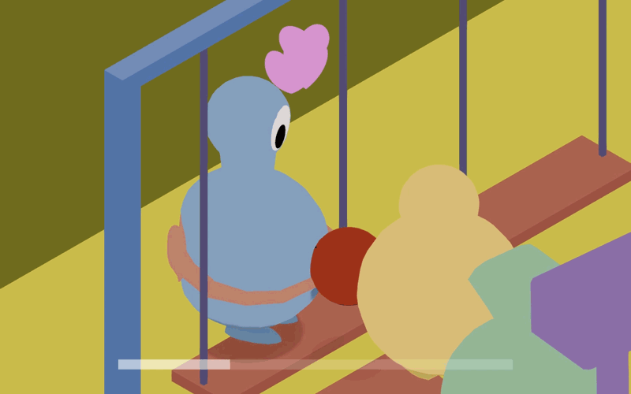

[PLAY ONLINE HERE]
[or watch a playthrough here]
<Role: game designer, level designer, programmer, 3D artist, animator, sound designer>
HUG THEM REAL GOOD is a cute hugging simulator.
You end up on a playground with only your spherical self and two arms. Arms that your potential friends don't have. Befriend up to four cool kids by hugging them! And roll around, that's also fun.
Made with Unity during Train Jam 2018 with Timothy Sun.
You can play with WASD/arrow keys and either scrollwheel/trackpad or bend sensor set up with Arduino that feeds pressure values to the Unity game. Here it is in action:

We started with "let's make something cute," even before we received the prompt, "Odyssey." We also wanted to use the bend sensor Tim had brought onto the train, so naturally cute plus bend sensor meant a hugging mechanic. From there, ideas kept flowing: play as a rolling ball to go around hugging kids (with one eye, loosely inspired by cyclops from Homer's Odyssey) in a playground.
Because there was no conventional source control we could use, we passed Unity packages back and forth after dividing up tasks evenly. Initially, I handled all the art, level design, and scene setup, such as the swing and seesaw physics, while Tim handled the code. As we neared the completion of the game, we mixed up the tasks as most game jams go. For example, Tim made the emotion indicators during the hugging sequence and I scripted cutscenes, animations, and sounds. Overall, it was a smooth, easygoing process where we balanced out the tasks pretty well from the get-go and managed to sustain it.
One of the challenges was designing the hugger. After experimenting with the arms, I rigged the arms and set different angles that each joint would rotate by script at every stage of the hug for that adjustable hug mechanic. Another challenge was settling on an art style; from the beginning, I chose an unlit shader for that simple 2D look, but the lack of visible depth hurt the usability. Instead of fighting with the lighting and shaders, due to time pressure, I decided to go with 100% unlit shader material to fake the shadows for depth.
Color choice was also something I had to think about for the level design; I knew I had to work with a limited palette, otherwise it would lose readability to the player. So, I chose three main colors for each playground structure, the main red becoming equivalent to a ramp, while maintaining the unique colors of the kid characters. For the layout, I wanted the player to feel like they could freely explore the space, yet have a circular path around the arena for a sense of progression, with the center being always accessible so if they happened to chance upon the "final goal" early on, they knew to come back to it at the end.
  